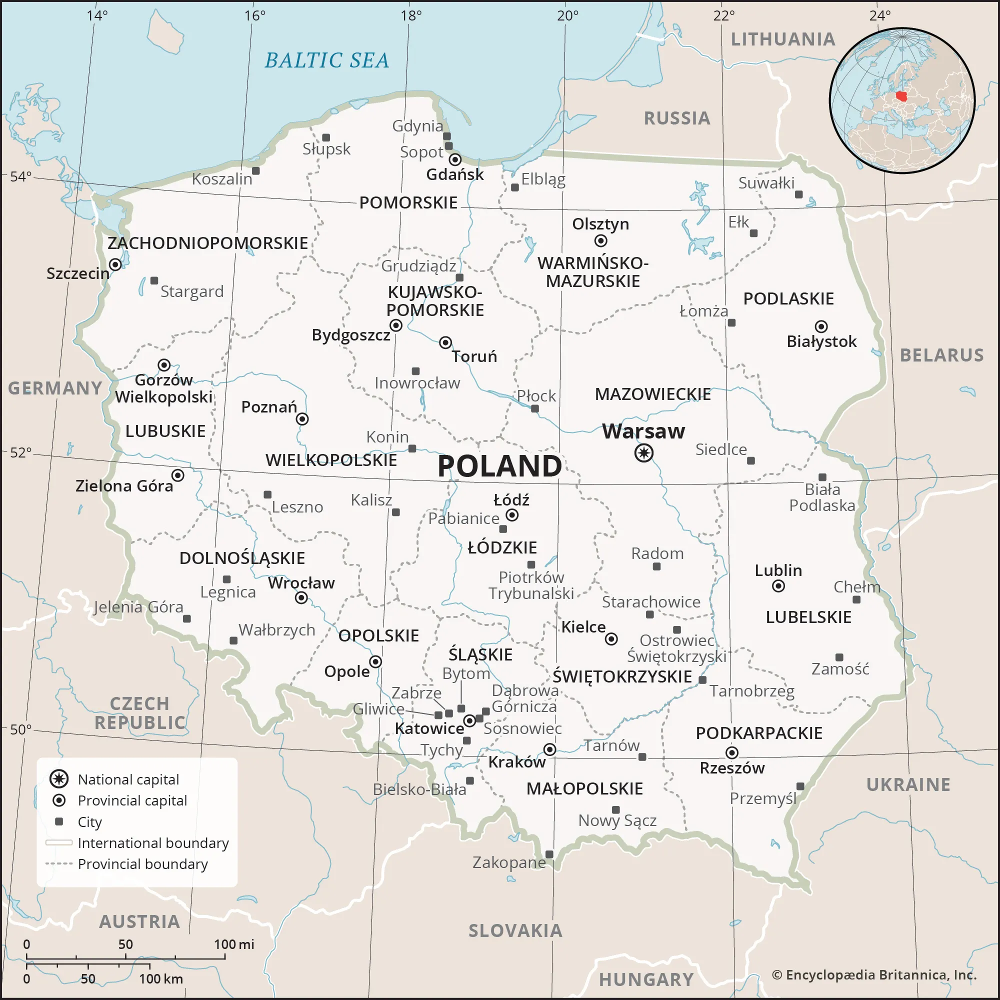
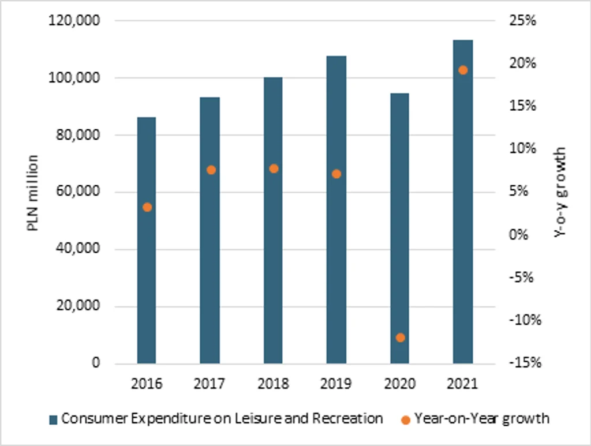
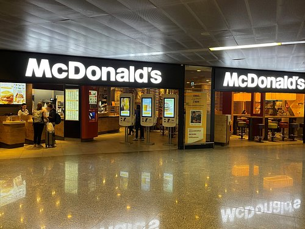
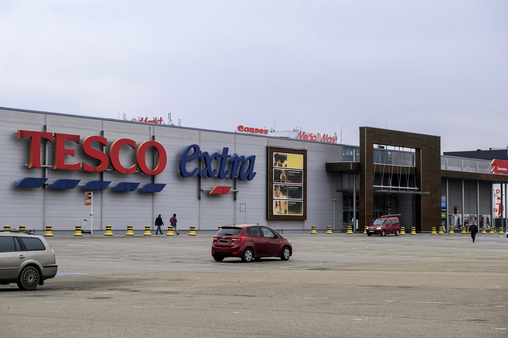

We are here to provide you with information, tips and advices when competing in Polan's thriving economic market as a MNA
We are here to provide you with information, tips and advices when competing in Polan's thriving economic market as a MNA
We are here to provide you with information, tips and advices when competing in Polan's thriving economic market as a MNA

EU EURES reports a standard limit of eight hours per day and an average of 40 hours per week. Working hours in Poland are usually from 8:00 to 16:00. With no formal lunch break. A two week annual holidays is usually taken in the summer months of June, July or August.
In the fourth quarter of 2024, women made up about 46.1% of employed people. The economic activity rate was 65.5% for men and 51.9% for women
U.S. trade guidance recommends using Polish. Buyers often expect technical details and proof of product claims. Decisions in large organizations may take several meetings, and personal relationships and trust can matter
Businesses in Poland participate in various special celebrations and holidays, in different seasons of the year, most significant of which includes:
- January 1 and 6: Easter Sunday and Easter Monday
- May 1: Labour Day, May 3: Constitution Day, Pentecost; Corpus Christi
- August 15: Assumption Day, November 1: All Saints' Day, November 11: Independence Day
- December 24: Christmas Eve, December 25 and 26: Christmas
One of the most important factors that can affect the possibility of achieving success in business in a given country, is getting to know and understand the cultural differences. The following are examples of common business practices within Poland:
- During formal meetings, Poles wear standard, smart clothes. Men, as a rule, wear dark suits with a shirt and tie, while women a jacket and trousers or skirt.
- Poles are usually punctual, the time of a business meeting is treated as a binding arrangement. Despite this, being up to five minutes late is widely tolerated.
- During a meeting with a new Polish partner, a small symbolic gift, e.g. a souvenir from your country or a company gadget, will certainly be appreciated.
- During meals, the most important guests are usually seated on the right side of the host and behavior does not differ from that in force in other European countries. It is quite common during such a meeting to suggest a toast and give speeches during or after the meal
This dimension deals with the fact that all individuals in societies are not equal. Poland scores 68 compared to Canada's 39, indicating a higher acceptance of hierarchical order in Poland.
With a score of 39, Canadian culture is marked by interdependence and a value placed on egalitarianism, reflected in the relative absence of overt status or class distinctions. Hierarchy in organisations exists for convenience; superiors are accessible, managers draw on the expertise of individuals and teams, and consulting one another and sharing information freely is customary.
At 68, Poland is a hierarchical society in which people accept an order where everyone has a place that needs no further justification. Inequalities are accepted as natural, centralisation is popular, subordinates expect to be told what to do, and the ideal boss is a benevolent autocrat.
Individualism defined as the degree of interdependence a society maintains among its members. Canada scores 80, showing a highly individualistic society compared to Poland (60).
At 80 - its highest dimension score - Canada is an Individualist culture. As with its American neighbour to the south, this means a loosely knit society in which people are expected to look after themselves and their immediate families.
With a score of 60, Poland shows no strong preference on this dimension, balancing collectivist and individualist tendencies. Strong family bonds and loyalty to one's close circle remain important, while more individualist, self-reliant patterns - and a focus on personal achievement - have grown markedly
A high score (Masculine) indicates that the society will be driven by competition, achievement and success. Both countries score relatively close (Poland: 64, Canada: 52).
At 52, Canada is a moderately achievement-oriented (high-MAS) culture - mildly decisive in behavioural terms. Canadians strive for high standards in work and in play - sport especially - but the overall tone around achievement, success and winning is more subdued than in the US.
Poland scores 64 and is an achievement-oriented (high-MAS) culture - decisive in behavioural terms. People tend to "live in order to work", managers are expected to be decisive and assertive, and the emphasis is on competition, performance and getting ahead, with conflicts confronted directly.
The extent to which members feel threatened by ambiguity or unknown situations. Poland scores 93, showing a very high preference for avoiding uncertainty.
At 48, Canada is fairly "uncertainty accepting". New ideas, innovative products and novel ways of doing things - in technology, business or consumer products - are readily accepted, and Canadians are tolerant of differing opinions and value freedom of expression.
Poland scores 93 and has a very strong preference for avoiding uncertainty. There is an emotional need for rules, a respect for hard work, precision and punctuality, and some resistance to untested ideas, with security an important motivator.
How societies prioritize their own past while dealing with the challenges of the present and future. Both score low (Poland: 38, Canada: 36).
At 38, Canada has a moderately pragmatic culture. People accept that truth depends on situation, context and time, adapt traditions to changing conditions fairly readily, and show a reasonable propensity to save and invest.
With a score of 39, Poland shows strong preference for short term benefits rather than those that benefit them in the longer term. Traditions, values of both the present and the past is highly valued with respect and consideration.
The degree to which people try to control their desires and impulses. Canada scores 68 (Indulgent) compared to Poland's score of 29 (Restrained).
With a score of 68, Canada is an Indulgent culture. People are inclined to enjoy life and value leisure, with an optimistic outlook. This shows in Canadians' enthusiasm for the outdoors in every season - from lake cottages and hiking in summer to hockey, skiing and skating in winter - and a general emphasis on making time to enjoy life.
With a low score of 29, Poland is a Restrained culture. People place limited emphasis on leisure, exercise control over their impulses, and lean towards caution and a degree of pessimism, feeling that behaviour should be governed by social norms.
The Polish consumer market has increased as household incomes have increased. The average disposable income per person in 2024 was PLN 3,167 per month, compared to the average amount spent by consumers per month of PLN 1,878. Businesses should provide a range of pricing to suit the consumers.
Polish consumers look at the price, quality, ease of purchase and deals when buying items. 47% of Polish online shoppers look for deals/discounts when purchasing items (Strategy&, 2024). Consumers will purchase items both online and in person.
Business Link: Canadian businesses should provide competitive pricing, ease of delivery, polish customer service, and deals. Businesses can understand the spending habits of consumers in order to bring more customers.

International businesses will need to change their products, packaging, and marketing. Food products will need to be labelled according to European Union regulations. This may include items needing to have details about ingredients and allergens. Businesses should research what products are popular in this region and ensure the product details are translated into Polish.
The marketing should be culturally appropriate. Additionally, Polish buyers value clear delivery terms, visible customer ratings, and transparent return policies with no hidden checkout fees. Poles expect their shopping to be justified by quality, transparency, and trustworthiness. When it comes to bigger purchases, many still look for discounts and compare deals. In industrial or B2B sectors, establishing a local presence (via a distributor, agent, or face-to-face meetings) and conducting negotiations in Polish significantly accelerates trust.

McDonald’s operates in Poland and still retains their global brand image. They have created products to appeal to the local market, for example the WieśMac burger. This is known as glocalization. This is when businesses retain their global brand but create products or marketing to appeal to locals. This can help businesses attract customers.

In 2020, British Supermarket Tesco agreed to sell their business in Poland. This included 301 stores (Tesco PLC, 2020). This shows that just because a business is well known globally doesn’t mean they will be successful. Businesses have to adapt to the competition, costs and the customers. Tesco leaving the market wasn’t due to the culture in Poland but also the market.
Generally Canadian citizens do not need a visa to visit Poland for tourist or short-term business purposes. This can be for up to 90 days every 180 days in the Schengen Area. Passports generally need to be less than 10 years old and valid for 3 months after the intended date of departure.
If Canadians intend on working/studying for longer, they may need the correct visa or permit to reside or work. Canadians aged between 18-35 who are eligible can look into International Experience Canada (IEC). This provides opportunities for Working Holiday, Young Professionals and International Co-op.
For more information, please visit: https://travel.gc.ca/destinations/poland#entryexit
Wigilia is a big tradition in Poland. It is celebrated on the 24th of December. Traditions include eating 12 meat-free dishes such as Pierogi and mushroom soup and giving Opłatek (a thin wafer) with good wishes. This emphasizes the importance of family.
The Wigilia is a meatless meal, no doubt the result of a long-time Church mandate that a strict fast and abstinence be observed on this day before Christmas. Although the Church laws have been revised and permit meat to be eaten on this day, the traditional meal remains meatless. Items that would normally be included in a traditional Wigilia menu include mushroom soup, boiled potatoes (kartofle), pickled herring (sledzie), fried fish, pierogi, beans and sauerkraut (groch i kapusta), a dried fruit compote, babka, platek, assorted pastries, nuts and candies.
Easter is an important Christian celebration in Poland. Traditions include having święconka (blessing food baskets) and Pisanki (decorated eggs representing new life). Some people also celebrate Śmigus-Dyngus on Easter Monday by having fun splashing each other with water.
At home, people partake in an Easter breakfast, during which they gift and share eggs. The Easter table is decorated with Easter eggs and other symbols, such as a Lamb of God (a small figurine, often sculpted from edible substances such as sugar, bread, or butter), similar small figurines of chickens and rabbits (Easter Bunnies), and springtime flowers or twigs of plants such as buxus. Typical Easter foods include eggs, meats such as kiełbasa (sausage), soups such as żurek and barszcz, and cakes such as mazurek and baba.
Polish culture is deeply rooted in its Slavic heritage, with renowned contributions to art, music, and cuisine.
From the historic old towns of Warsaw and Kraków to the Tatra Mountains, tourism thrives here year-round.
Key historical events have shaped modern Poland into a vibrant democratic nation within the European Union.